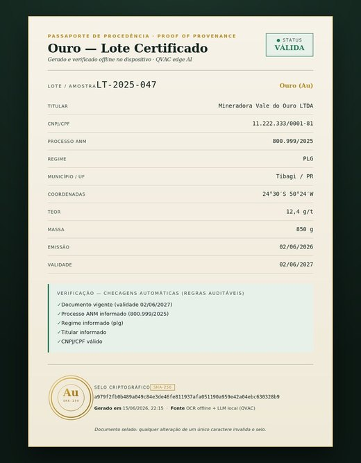
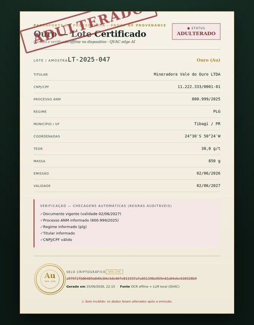

Passaporte de procedência de ouro, gerado offline no dispositivo e verificável publicamente por qualquer pessoa — sem servidor, sem precisar confiar em ninguém.
A cadeia do ouro passa por lugares sem internet confiável — a lavra, a estrada, o ponto de coleta — e lida com documentos sensíveis que não deveriam sair do dispositivo. IA na nuvem não é opção ali.
Foto do documento → OCR offline → um LLM local estrutura os dados → verificação por regras → selo SHA-256. Cada camada adiciona confiança verificável.
Um documento válido e o mesmo documento adulterado: muda um caractere e o selo quebra.


Cole o JSON do passaporte ou carregue o arquivo. A verificação recalcula o selo criptográfico aqui no seu navegador — nada é enviado para nenhum servidor.
100% offline no dispositivo. E quando o aparelho é fraco, o LLM pesado pode ser delegado a um peer por P2P criptografado (sem servidor, sem nuvem) — enquanto OCR, verificação e selo continuam locais.